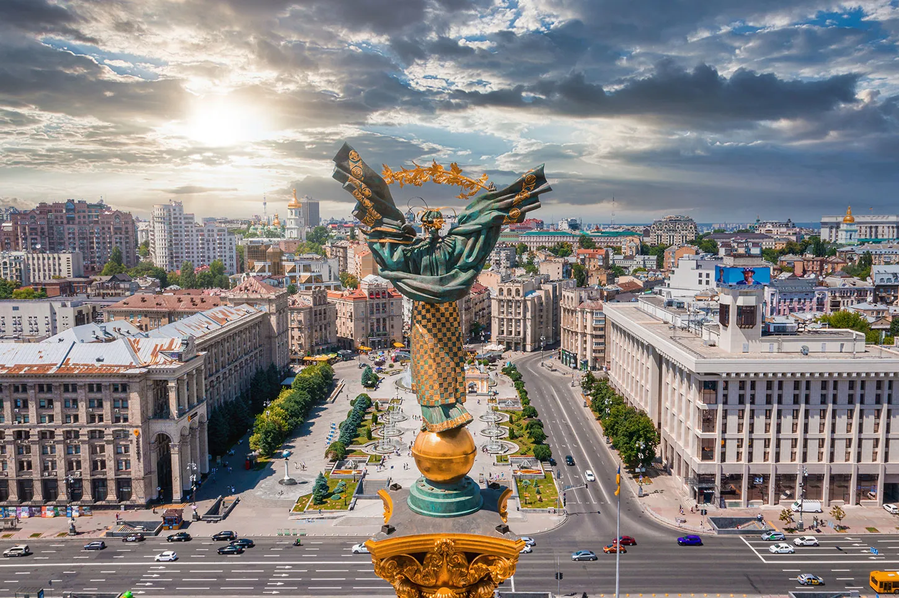

national capital, Ukraine
Cityscape
Modern Kyiv is a mix of the old (Kyiv preserved about 70 percent of more than 1,000 buildings built during 1907–1914) and the new, seen in everything from the architecture to the stores and to the people themselves. When the capital of the Ukrainian SSR was moved from Kharkiv to Kyiv many new buildings were commissioned to give the city "the gloss and polish of a capital". In the discussions that centered on how to create a showcase city center, the current city center of Khreshchatyk and Maidan Nezalezhnosti (Independence Square) were not the obvious choices. Some of the early, ultimately not materialised, ideas included a part of Pechersk, Lypky, European Square, and Mykhailivska Square. The plans of building massive monuments (of Vladimir Lenin and Stalin) were also abandoned, due to lack of money (in the 1930s–1950s) and because of Kyiv's hilly landscape. Experiencing rapid population growth between the 1970s and the mid-1990s, the city has continued its consistent growth after the turn of the millennium. As a result, Kyiv's central districts provide a dotted contrast of new, modern buildings among the pale yellows, blues, and greys of older apartments. Urban sprawl has gradually reduced, while population densities of suburbs has increased. The most expensive properties are in the Pechersk and Khreshchatyk areas. It is also prestigious to own a property in newly constructed buildings in the Kharkivskyi Raion or Obolon along the Dnieper. Ukrainian independence at the turn of the millennium has heralded other changes. Western-style residential complexes, modern nightclubs, classy restaurants and prestigious hotels opened in the centre. And most importantly, with the easing of the visa rules in 2005, Ukraine is positioning itself as a prime tourist attraction, with Kyiv, among the other large cities, looking to profit from new opportunities. The centre of Kyiv has been cleaned up and buildings have been restored and redecorated, especially Khreshchatyk and Maidan Nezalezhnosti. Many historic areas of Kyiv, such as Andriyivskyy Descent, have become popular street vendor locations, where one can find traditional Ukrainian art, religious items, books, game sets (most commonly chess) as well as jewellery for sale. At the United Nations Climate Change Conference 2009, Kyiv was the only Commonwealth of Independent States city to have been inscribed into the TOP30 European Green City Index (placed 30th). Kyiv's most famous historical architecture complexes are the St. Sophia Cathedral and the Kyiv Pechersk Lavra (Monastery of the Caves), which are recognized by UNESCO as a World Heritage Site. Noteworthy historical architectural landmarks also include the Mariinskyi Palace (designed and constructed from 1745 to 1752, then reconstructed in 1870), several Eastern Orthodox churches such as St. Michael's Cathedral, St. Andrew's, St. Vladimir's, the reconstructed Golden Gate and others. One of Kyiv's widely recognized modern landmarks is the highly visible giant Mother Motherland statue made of titanium standing at the National Museum of the History of Ukraine in the Second World War on the Right bank of the Dnieper. Other notable sites is the cylindrical Salut hotel, across from Glory Square and the eternal flame at the World War Two memorial Tomb of the Unknown Soldier, and the House with Chimaeras. Among Kyiv's best-known monuments are Mikhail Mikeshin's statue of Bohdan Khmelnytsky astride his horse near St. Sophia Cathedral, the venerated Vladimir the Great (St. Vladimir), the baptizer of Rus', overlooking the river above Podil from Saint Vladimir Hill, the monument to Kyi, Shchek and Khoryv and Lybid, the legendary founders of the city at the Dnieper embankment. On Independence Square in the city centre, two monuments elevate two of the city protectors; the historic protector of Kyiv Michael Archangel atop a reconstruction of one of the old city's gates and a modern invention, the goddess-protector Berehynia atop a tall column.
Attractions
It is said that one can walk from one end of Kyiv to the other in the summertime without leaving the shade of its many trees. Most characteristic are the horse-chestnuts (каштани, kashtany). Kyiv is known as a green city with two botanical gardens and numerous large and small parks. The National Museum of the History of Ukraine in the Second World War is here, which offers both indoor and outdoor displays of military history and equipment surrounded by verdant hills overlooking the Dnieper river. The monument to St. Volodymyr, the Baptiser of Rus', overlooking from Saint Vladimir Hill the scenic panorama of the left bank of Dniepr, is one of the symbols of Kyiv, often depicted in paintings and photographic works of the city. Among the numerous islands, Venetsianskyi (or Hydropark) is the most developed. It is accessible by metro or by car, and includes an amusement park, swimming beaches, boat rentals, and night clubs. The Victory Park (Park Peremohy) near Darnytsia subway station is a popular destination for strollers, joggers, and cyclists. Boating, fishing, and water sports are popular pastimes in Kyiv. The area lakes and rivers freeze over in the winter and ice fishermen are a frequent sight, as are children with their ice skates. However, the peak of summer draws out a greater mass of people to the shores for swimming or sunbathing, with daytime high temperatures sometimes reaching 30 to 34 °C (86 to 93 °F). Lilacs in the National Botanical Garden, with the Vydubychi Monastery, Darnitskiy Rail Bridge and left-bank Kyiv visible in the background The centre of Kyiv (Independence Square and Khreschatyk Street) becomes a large outdoor party place at night during summer months, with thousands of people having a good time in nearby restaurants, clubs and outdoor cafes. The central streets are closed for auto traffic on weekends and holidays. Andriyivskyy Descent is one of the best known historic streets and a major tourist attraction in Kyiv. The hill is the site of the Castle of Richard the Lionheart; the baroque-style St Andrew's Church; the home of Kyiv born writer, Mikhail Bulgakov; the monument to Yaroslav the Wise, the Grand Prince of Kyiv and of Novgorod; and numerous other monuments. A wide variety of farm produce is available in many of Kyiv's farmer markets with the Besarabsky Market in the very centre of the city being most famous. Each residential region has its own market, or rynok. Here one will find table after table of individuals hawking everything imaginable: vegetables, fresh and smoked meats, fish, cheese, honey, dairy products such as milk and home-made smetana (sour cream), caviar, cut flowers, housewares, tools and hardware, and clothing. Each of the markets has its own unique mix of products with some markets devoted solely to specific wares such as automobiles, car parts, pets, clothing, flowers, and other things. At the city's southern outskirts, near the historic Pyrohiv village, there is an outdoor museum, officially called the Museum of Folk Architecture and Life of Ukraine It has an area of 1.5 square kilometres (1 sq mi). This territory houses several "mini-villages" that represent by region the traditional rural architecture of Ukraine. Kyiv also has numerous recreational attractions like bowling alleys, go-cart tracks, paintball venues, billiard halls and even shooting ranges. The 100-year-old Kyiv Zoo is on 40 hectares and according to CBC "the zoo has 2,600 animals from 328 species".
